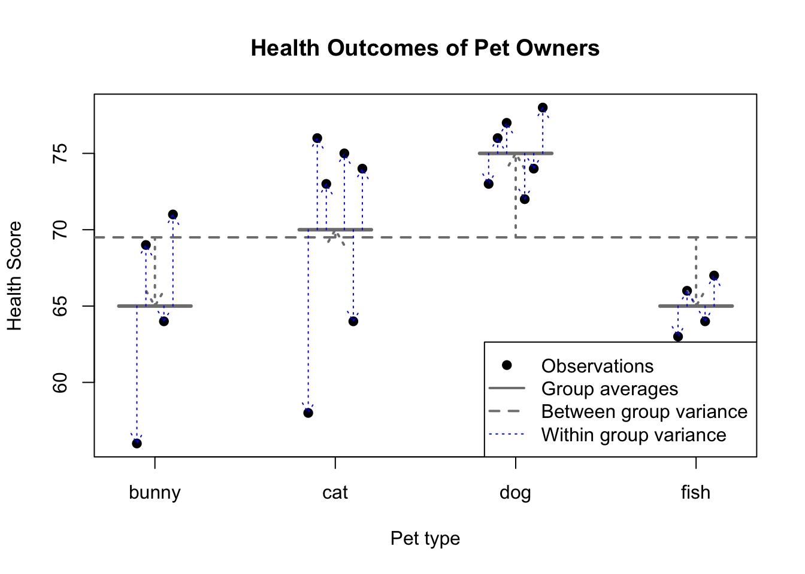

Code
healths <- c(56,69,64,71,
58,76,73,75,64,74,
73,76,77,72,74,78,
63,66,64,67)
xjitter <- c(0.9,0.95,1.05,1.1,
1.85,1.9,1.95,2.05,2.1,2.15,
2.85,2.9,2.95,3.05,3.1,3.15,
3.9,3.95,4.05,4.1)
plot(healths~xjitter,pch=19,col=1,xaxt='n',xlim=c(0.8,4.2),
xlab='Pet type',ylab='Health Score',main='Health Outcomes of Pet Owners')
axis(side=1,at=1:4,labels=c('bunny','cat','dog','fish'),tick=TRUE)
segments(x0=(1:4)-0.2,y0=c(65,70,75,65),x1=(1:4)+0.2,y1=c(65,70,75,65),
col='grey50',lwd=3)
abline(h=69.5,col='grey50',lty=2,lwd=2)
arrows(x0=1:4,y0=rep(69.5,4),y1=c(65,70,75,65),
col='grey50',length=0.15,lwd=2,lty=3)
arrows(x0=xjitter[1:4],y0=65,y1=healths[1:4],col='#0000ff',length=0.1,lty=3)
arrows(x0=xjitter[5:10],y0=70,y1=healths[5:10],col='#0000ff',length=0.1,lty=3)
arrows(x0=xjitter[11:16],y0=75,y1=healths[11:16],col='#0000ff',length=0.1,lty=3)
arrows(x0=xjitter[17:20],y0=65,y1=healths[17:20],col='#0000ff',length=0.1,lty=3)
legend(x='bottomright',pch=c(19,NA,NA,NA),lwd=c(NA,2,2,1),lty=c(NA,1,2,3),col=c('black','grey50','grey50','#0000ff'),
legend=c('Observations','Group averages','Between group variance','Within group variance'))